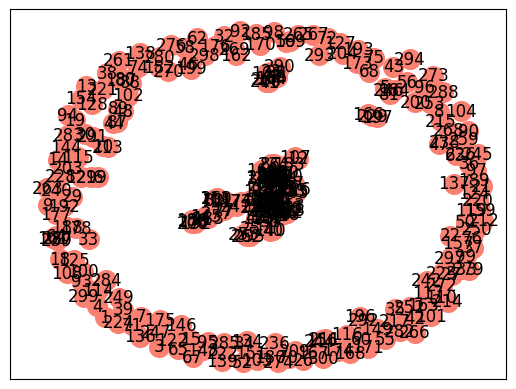

from bs4 import BeautifulSoup as soup
import requests
import pandas as pd
import nltk
from nltk.tokenize import sent_tokenize
import re
from nltk.corpus import stopwords
from sklearn.feature_extraction.text import TfidfVectorizer,CountVectorizer, TfidfTransformer
from sklearn.metrics.pairwise import cosine_similarity
from nltk.tokenize import word_tokenize
from collections import Counter
import networkx as nx
import matplotlib.pyplot as plt3 Tugas Crawling_berita_Kompas dan ekstrak kata kunci
- Nama : Muhammad Adam Zaky Jiddyansah
- NIM : 210411100234
- Kelas : Penambangan dan Pencarian Web B
3.1 Menginstall dan mengimport library yang dibutuhkan
Libraries yang Digunakan * BeautifulSoup (bs4): Library untuk melakukan web scraping dan ekstraksi data HTML. * Requests: Library untuk membuat permintaan HTTP ke situs web dan mendapatkan konten halaman. * Pandas (pd): Library untuk mengelola dan menyimpan data dalam format CSV.
nltk.download("punkt")
nltk.download("stopwords")[nltk_data] Downloading package punkt to /root/nltk_data...
[nltk_data] Unzipping tokenizers/punkt.zip.
[nltk_data] Downloading package stopwords to /root/nltk_data...
[nltk_data] Unzipping corpora/stopwords.zip.True3.2 Web Scraping Berita Kompas dan Penyimpanan ke Google Drive
Kode ini menggunakan teknik web scraping untuk mengumpulkan judul dan isi berita dari 200 halaman indeks situs Kompas.com. Berikut adalah penjelasan komponen utama dari kode tersebut:
Proses Web Scraping dan menyimpan data * Iterasi sebanyak 5 (karna yang akan dipreprocessing kali ini cuman 1 berita) halaman indeks(tergantung indeks pada website) di situs Kompas.com. * Untuk setiap halaman, melakukan permintaan HTTP dan mendapatkan konten HTML. * Menggunakan BeautifulSoup untuk mengekstrak daftar berita dari halaman tersebut. * Untuk setiap berita, mengakses halaman individu untuk mengambil judul dan isi berita. * Data judul dan isi berita ditambahkan ke dalam dictionary csv. Penyimpanan Data * Setelah proses scraping selesai, data disimpan dalam file CSV dengan nama “Data_BeritaKompas.csv” terlebih dahulu di environment Colab. * File CSV tersebut disalin ke dalam Google Drive pada path “/content/drive/My Drive/Penambangan WEB/Data/”.
from google.colab import drive
drive.mount('/content/drive')
csv = {"Judul": [], "Berita": []}
for i in range(1, 20):
url = "https://indeks.kompas.com/?page={}".format(i)
client = requests.get(url)
page_html = client.content
page_soup = soup(page_html, "html.parser")
berita = page_soup.findAll("div", {"class": "latest--indeks mt2 clearfix"})
for h in berita:
r = requests.get(h.select_one('a.article__link')['href'])
page = soup(r.content, "html.parser")
halaman_isi = page.select_one("div", {"class": "col-bs10-10"})
judul_berita = halaman_isi.select("h1", {"class": "read__title"})
judul = judul_berita[0].text
isi_berita = halaman_isi.findAll('p')
isi = '\n'.join([p.get_text() for p in isi_berita])
csv["Judul"].append(judul)
csv["Berita"].append(isi)
data = pd.DataFrame(csv)
csv_path_drive = '/content/drive/My Drive/Penambangan WEB/Data/Data_BeritaKompas.csv'
data.to_csv(csv_path_drive, index=False)Drive already mounted at /content/drive; to attempt to forcibly remount, call drive.mount("/content/drive", force_remount=True).3.3 Import dan Membaca Data CSV
Menggunakan Pandas untuk membaca file CSV yang telah disimpan sebelumnya. File CSV tersebut berisi data judul dan isi berita dari Kompas.com yang telah di-web scrape sebelumnya, lalu menampilkan data yang telah dibaca dari file CSV dalam bentuk DataFrame untuk dapat dianalisis lebih lanjut.
from google.colab import drive
drive.mount('/content/drive')
file_path = "/content/drive/My Drive/Penambangan WEB/Data/Data_BeritaKompas.csv"
df = pd.read_csv(file_path)
dfDrive already mounted at /content/drive; to attempt to forcibly remount, call drive.mount("/content/drive", force_remount=True).| Judul | Berita | |
|---|---|---|
| 0 | Lirik dan Makna Lagu Oh Indang Oh Apang, Lagu ... | Lirik dan Makna Lagu Oh Indang Oh Apang, Lagu ... |
| 1 | Berapa Banyak Kalori yang Dibakar dengan Berja... | Berapa Banyak Kalori yang Dibakar dengan Berja... |
| 2 | Pendaftaran Petugas KPPS Pemilu 2024 Dibuka, B... | Pendaftaran Petugas KPPS Pemilu 2024 Dibuka, B... |
| 3 | Produser Ungkap Tiket Advance Siksa Neraka Sol... | Produser Ungkap Tiket Advance Siksa Neraka Sol... |
| 4 | Peringati Hari Korban 40 Ribu Jiwa, Pj Gubernu... | Peringati Hari Korban 40 Ribu Jiwa, Pj Gubernu... |
| 5 | Lirik dan Chord Lagu Salam Kenal - Vidi Aldiano | Lirik dan Chord Lagu Salam Kenal - Vidi Aldian... |
| 6 | Pikap Tabrak Truk Tronton di Kota Malang, Satu... | Pikap Tabrak Truk Tronton di Kota Malang, Satu... |
| 7 | Perbandingan Yamaha XMAX 250 Tech Max dan Kymc... | Perbandingan Yamaha XMAX 250 Tech Max dan Kymc... |
| 8 | Hasil Mediasi Keluarga Bayi HNM: RS Hermina Po... | Hasil Mediasi Keluarga Bayi HNM: RS Hermina Po... |
| 9 | Tanggapi Hasil Survei Litbang "Kompas", Mahfud... | Tanggapi Hasil Survei Litbang "Kompas", Mahfud... |
| 10 | Kepsek SMA 17 Makassar Dimutasi Dampak Aksi De... | Kepsek SMA 17 Makassar Dimutasi Dampak Aksi De... |
| 11 | Status WhatsApp Bakal Bisa Dibagikan Langsung ... | Status WhatsApp Bakal Bisa Dibagikan Langsung ... |
| 12 | Alat yang Bekerja Berdasarkan Prinsip Tuas | Alat yang Bekerja Berdasarkan Prinsip Tuas\nPe... |
| 13 | Pelaku Perusakan Belasan Mobil Dinas di Semara... | Pelaku Perusakan Belasan Mobil Dinas di Semara... |
| 14 | Rafael Alun Dihukum Bayar Uang Pengganti 18,9 ... | Rafael Alun Dihukum Bayar Uang Pengganti 18,9 ... |
| 15 | Begini Peran Teknik Industri dalam Pemanfaatan... | Begini Peran Teknik Industri dalam Pemanfaatan... |
| 16 | Lexus Siapkan RZ550e, RZ Berperforma Tinggi | Lexus Siapkan RZ550e, RZ Berperforma Tinggi\nT... |
| 17 | Pengendara Motor Tewas di Lokasi Kejadian Sete... | Pengendara Motor Tewas di Lokasi Kejadian Sete... |
| 18 | Newcastle Vs Milan, Kabar Baik untuk Rossoneri... | Newcastle Vs Milan, Kabar Baik untuk Rossoneri... |
3.4 Mengambil salah satu berita untuk menjadi sampel data yang akan dianalisis
berita = df['Berita'].iloc[15]
berita'Begini Peran Teknik Industri dalam Pemanfaatan AI di Era Industri 4.0\n\nKOMPAS.com – Implementasi kecerdasan buatan atau artificial intelligence (AI) dalam industri menjadi salah satu poin utama untuk merespons kompleksitas era digital.\nTidak hanya berpengaruh pada operasional bisnis, AI juga dapat membuka pintu bagi berbagai peluang inovatif.\nSelain AI, era yang dikenal sebagai industri 4.0 menggambarkan integrasi teknologi canggih lain, seperti internet of things (IoT) dan big data, dalam proses industri. Integrasi ini dilakukan untuk meningkatkan efisiensi dan produktivitas.\nPada tingkat global, AI telah menjadi katalisator perubahan dalam industri. Menurut laporan dari Grand View Research, pasar AI diproyeksikan mencapai nilai triliunan dollar AS pada 2028 dengan tingkat pertumbuhan yang signifikan.\nHal senada juga disampaikan National Technology Officer Microsoft Indonesia Panji Wasmana. Menurutnya, teknologi AI dan komputasi awan (cloud) memainkan peranan penting dalam mewujudkan industri 4.0.\nBagi industri, keduanya dapat meningkatkan kolaborasi, automasi, produktivitas, dan kemampuan analisis data sehingga memungkinkan pelaku industri untuk tetap terdepan.\nSementara, survei yang dilakukan PwC menyebutkan, sebanyak 54 persen eksekutif perusahaan percaya bahwa AI berdampak positif terhadap rantai pasok karena dapat meningkatkan visibilitas dan responsif terhadap perubahan pasar.\nHal itu juga tecermin pada sektor manufaktur. Dengan menganalisis data secara besar-besaran, AI dapat memberikan prediksi yang akurat tentang permintaan pasar, mengoptimalkan persediaan, dan mengurangi pemborosan.\nMeski demikian, hanya sebagian kecil perusahaan yang berhasil mengimplementasikan AI secara menyeluruh. Hal ini menunjukkan ada kesenjangan antara potensi dan implementasi yang berhasil.\nMasalah utama yang dihadapi industri dalam mengadopsi AI adalah kompleksitas mengintegrasikan dan mentransformasikannya secara digital.\nSebagian besar perusahaan kesulitan memahami integrasi teknologi baru ke dalam infrastruktur yang sudah ada tanpa mengganggu operasional yang sedang berlangsung. Kondisi ini membuat perusahaan membutuhkan sumber daya manusia (SDM) yang terampil dan memiliki pemahaman mendalam tentang implementasi AI.\nTeknik industri jadi solusi\nUntuk menghadapi kompleksitas transformasi industri yang didorong AI, ilmu teknik industri dapat menjadi garda terdepan dalam mendidik calon pemimpin yang memahami integrasi teknologi dan proses bisnis.\nSalah satu perguruan tinggi yang menyediakan program studi teknik industri adalah Binus University.\nHead of Industrial Engineering Study Program Binus University Ir Taufik, ST, MM, PhD, IPM menekankan bahwa profesional industri perlu memiliki pemahaman mendalam tentang cara mengoptimalkan kecerdasan buatan dalam bisnis dan operasi sehari-hari.\n“Program studi Teknik Industri Binus University menyajikan kurikulum terkini serta relevan yang dapat menjembatani kesenjangan antara teknologi AI dan kebutuhan bisnis,” ujar Taufik dalam siaran pers yang diterima Kompas.com, Senin (11/12/2023).\nDalam menghadapi revolusi AI yang tak terelakkan, lanjut dia, ilmu teknik industri tidak hanya menawarkan pendidikan yang relevan, tetapi juga memberikan fasilitas yang mendukung pemahaman mendalam tentang peran AI dalam dunia industri.\nTaufik mengatakan, dengan teknologi terkini dan kurikulum yang terus diperbarui, ilmu teknik industri menjadi kunci untuk membekali calon penerus bangsa dengan kemampuan mengelola dan memimpin dalam era industri yang didorong oleh AI.\n“Dengan upaya terus-menerus dalam pengembangan teknologi dan SDM yang terampil, kita dapat merangkul masa depan industri yang semakin cerdas dan inovatif,” ucap Taufik.\nSebagai informasi, untuk meningkatkan pemahaman mahasiswa terkait industri 4.0, Binus University juga menyediakan Laboratorium Digital Industry sebagai representasi industri termaju atau smart manufacturing.\nDi laboratorium itu, mahasiswa tidak hanya mempelajari konsep dasar industri 4.0, seperti virtual reality (VR), augmented reality (AR), analisis dan visualisasi data, automasi, serta simulasi, tetapi juga mengimplementasikannya dalam sesuai dengan kebutuhan industri.\nMelalui laboratorium tersebut, mahasiswa dapat mengendalikan mesin produksi dari tempat yang berbeda serta menjalankan proses manufaktur, seperti menghidupkan mesin, memonitor konsumsi energi, dan menanggapi penolakan produk.\nMahasiswa juga dapat mengolah database terkait proses produksi untuk memprediksi permintaan produk serga menentukan perbaikan pada proses dan sistem produksi.\nBeberapa peralatan yang tersedia pada laboratorium meliputi Xite Automax 250, Rokoko Suite, Oculus/Meta Quest 2, dan Driving Simulation.\nSelain itu, ada pula Computer Laboratory dengan 20 komputer yang memberikan akses langsung untuk mengimplementasikan konsep AI dalam berbagai proyek nyata dalam modeling, simulasi produksi, dan data.\nProgram yang berhasil diolah melalui komputer tersebut nantinya dapat diproses dalam Laboratorium Manufacturing Process. Dengan demikian, mahasiswa dapat memahami dan menganalisis proses industri manufaktur secara menyeluruh.\nSebagai persiapan untuk dunia industri nyata, laboratorium tersebut menjadi tempat bagi mahasiswa untuk mewujudkan konsep mereka menjadi produk, mengeksplorasi kreativitas dalam desain dan implementasi produk bersama tim, serta mempelajari langkah-langkah pembuatan produk.\nBeberapa peralatan yang juga tersedia di sana adalah Mesin CNC Milling, Mesin Lathe, Mesin Gerinda, dan 3D Printing.\nTak hanya itu, Binus University juga menyediakan Laboratorium Human-Integrated Systems. Di laboratorium ini, mahasiswa dapat merancang sistem kerja dengan mempertimbangkan aspek ergonomis manusia. Dengan demikian, peningkatan produksi dapat tercapai seiring jaminan keselamatan pekerja.\nLaboratorium tersebut dilengkapi sejumlah alat, seperti Ergo-bike dan Heart Rate Monitor. Kedua alat ini dapat membantu mahasiswa untuk menganalisis serta memberikan solusi efisiensi gerakan kerja dan memahami faktor manusia dalam lingkungan kerja.\nMahasiswa juga dapat merancang aplikasi bisnis proses yang berbasis kemudahan dan pengambilan keputusan.\nUntuk mendapatkan informasi lebih lanjut tentang Program Studi Teknik Industri di Binus University, Anda bisa mengunjungi tautan berikut.\nCopyright 2008 - 2023 PT. Kompas Cyber Media (Kompas Gramedia Digital Group). All Rights Reserved.'3.5 Pra-pemrosesan Teks / Preprocessing
Mengambil teks sebagai input dan melakukan beberapa langkah pra-pemrosesan pada teks dalam bahasa Indonesia. Langkah-langkah tersebut mencakup penghapusan angka, pembersihan karakter khusus, konversi teks ke huruf kecil, penghapusan kata-kata umum (stopwords), dan penggabungan kata-kata yang telah melalui proses sebelumnya. Tujuannya adalah membersihkan dan mempersiapkan teks agar dapat digunakan lebih lanjut dalam analisis atau pemrosesan lanjutan.
def preprocessing(text):
text = re.sub(r'\d+', '', text)
text = re.sub(r'[^\w\s.]', '', text)
text = text.lower()
stop_words = set(stopwords.words('indonesian'))
words = text.split()
filtered_words = [word for word in words if word.lower() not in stop_words]
preprocessing_text = ' '.join(filtered_words)
return preprocessing_textberita = preprocessing(berita)
print(berita)peran teknik industri pemanfaatan ai era industri . kompas.com implementasi kecerdasan buatan artificial intelligence ai industri salah poin utama merespons kompleksitas era digital. berpengaruh operasional bisnis ai membuka pintu peluang inovatif. ai era dikenal industri . menggambarkan integrasi teknologi canggih internet of things iot big data proses industri. integrasi meningkatkan efisiensi produktivitas. tingkat global ai katalisator perubahan industri. laporan grand view research pasar ai diproyeksikan mencapai nilai triliunan dollar as tingkat pertumbuhan signifikan. senada national technology officer microsoft indonesia panji wasmana. menurutnya teknologi ai komputasi awan cloud memainkan peranan mewujudkan industri .. industri meningkatkan kolaborasi automasi produktivitas kemampuan analisis data pelaku industri terdepan. survei pwc persen eksekutif perusahaan percaya ai berdampak positif rantai pasok meningkatkan visibilitas responsif perubahan pasar. tecermin sektor manufaktur. menganalisis data besarbesaran ai prediksi akurat permintaan pasar mengoptimalkan persediaan mengurangi pemborosan. perusahaan berhasil mengimplementasikan ai menyeluruh. kesenjangan potensi implementasi berhasil. utama dihadapi industri mengadopsi ai kompleksitas mengintegrasikan mentransformasikannya digital. perusahaan kesulitan memahami integrasi teknologi infrastruktur mengganggu operasional berlangsung. kondisi perusahaan membutuhkan sumber daya manusia sdm terampil memiliki pemahaman mendalam implementasi ai. teknik industri solusi menghadapi kompleksitas transformasi industri didorong ai ilmu teknik industri garda terdepan mendidik calon pemimpin memahami integrasi teknologi proses bisnis. salah perguruan menyediakan program studi teknik industri binus university. head of industrial engineering study program binus university ir taufik st mm phd ipm menekankan profesional industri memiliki pemahaman mendalam mengoptimalkan kecerdasan buatan bisnis operasi seharihari. program studi teknik industri binus university menyajikan kurikulum terkini relevan menjembatani kesenjangan teknologi ai kebutuhan bisnis taufik siaran pers diterima kompas.com senin . menghadapi revolusi ai terelakkan ilmu teknik industri menawarkan pendidikan relevan fasilitas mendukung pemahaman mendalam peran ai dunia industri. taufik teknologi terkini kurikulum diperbarui ilmu teknik industri kunci membekali calon penerus bangsa kemampuan mengelola memimpin era industri didorong ai. upaya terusmenerus pengembangan teknologi sdm terampil merangkul industri cerdas inovatif taufik. informasi meningkatkan pemahaman mahasiswa terkait industri . binus university menyediakan laboratorium digital industry representasi industri termaju smart manufacturing. laboratorium mahasiswa mempelajari konsep dasar industri . virtual reality vr augmented reality ar analisis visualisasi data automasi simulasi mengimplementasikannya sesuai kebutuhan industri. laboratorium mahasiswa mengendalikan mesin produksi berbeda menjalankan proses manufaktur menghidupkan mesin memonitor konsumsi energi menanggapi penolakan produk. mahasiswa mengolah database terkait proses produksi memprediksi permintaan produk serga menentukan perbaikan proses sistem produksi. peralatan tersedia laboratorium meliputi xite automax rokoko suite oculusmeta quest driving simulation. computer laboratory komputer akses langsung mengimplementasikan konsep ai proyek nyata modeling simulasi produksi data. program berhasil diolah komputer diproses laboratorium manufacturing process. mahasiswa memahami menganalisis proses industri manufaktur menyeluruh. persiapan dunia industri nyata laboratorium mahasiswa mewujudkan konsep produk mengeksplorasi kreativitas desain implementasi produk tim mempelajari langkahlangkah pembuatan produk. peralatan tersedia mesin cnc milling mesin lathe mesin gerinda d printing. binus university menyediakan laboratorium humanintegrated systems. laboratorium mahasiswa merancang sistem kerja mempertimbangkan aspek ergonomis manusia. peningkatan produksi tercapai seiring jaminan keselamatan pekerja. laboratorium dilengkapi alat ergobike heart rate monitor. alat membantu mahasiswa menganalisis solusi efisiensi gerakan kerja memahami faktor manusia lingkungan kerja. mahasiswa merancang aplikasi bisnis proses berbasis kemudahan pengambilan keputusan. informasi program studi teknik industri binus university mengunjungi tautan berikut. copyright pt. kompas cyber media kompas gramedia digital group. all rights reserved.##Memisahakan kalimat dengan word tokenize
Tokenisasi kalimat adalah proses memecah sebuah teks menjadi kalimat-kalimat yang lebih kecil atau unit yang disebut token, di mana token dapat berupa kata, frasa, atau karakter. Word tokenization, atau tokenisasi kata, adalah jenis tokenisasi yang fokus pada memecah teks menjadi unit kata.
kalimat = nltk.sent_tokenize(berita)
kalimat = [sentence.replace('.', '') for sentence in kalimat]
print(kalimat)['peran teknik industri pemanfaatan ai era industri ', 'kompascom implementasi kecerdasan buatan artificial intelligence ai industri salah poin utama merespons kompleksitas era digital', 'berpengaruh operasional bisnis ai membuka pintu peluang inovatif', 'ai era dikenal industri ', 'menggambarkan integrasi teknologi canggih internet of things iot big data proses industri', 'integrasi meningkatkan efisiensi produktivitas', 'tingkat global ai katalisator perubahan industri', 'laporan grand view research pasar ai diproyeksikan mencapai nilai triliunan dollar as tingkat pertumbuhan signifikan', 'senada national technology officer microsoft indonesia panji wasmana', 'menurutnya teknologi ai komputasi awan cloud memainkan peranan mewujudkan industri industri meningkatkan kolaborasi automasi produktivitas kemampuan analisis data pelaku industri terdepan', 'survei pwc persen eksekutif perusahaan percaya ai berdampak positif rantai pasok meningkatkan visibilitas responsif perubahan pasar', 'tecermin sektor manufaktur', 'menganalisis data besarbesaran ai prediksi akurat permintaan pasar mengoptimalkan persediaan mengurangi pemborosan', 'perusahaan berhasil mengimplementasikan ai menyeluruh', 'kesenjangan potensi implementasi berhasil', 'utama dihadapi industri mengadopsi ai kompleksitas mengintegrasikan mentransformasikannya digital', 'perusahaan kesulitan memahami integrasi teknologi infrastruktur mengganggu operasional berlangsung', 'kondisi perusahaan membutuhkan sumber daya manusia sdm terampil memiliki pemahaman mendalam implementasi ai', 'teknik industri solusi menghadapi kompleksitas transformasi industri didorong ai ilmu teknik industri garda terdepan mendidik calon pemimpin memahami integrasi teknologi proses bisnis', 'salah perguruan menyediakan program studi teknik industri binus university', 'head of industrial engineering study program binus university ir taufik st mm phd ipm menekankan profesional industri memiliki pemahaman mendalam mengoptimalkan kecerdasan buatan bisnis operasi seharihari', 'program studi teknik industri binus university menyajikan kurikulum terkini relevan menjembatani kesenjangan teknologi ai kebutuhan bisnis taufik siaran pers diterima kompascom senin ', 'menghadapi revolusi ai terelakkan ilmu teknik industri menawarkan pendidikan relevan fasilitas mendukung pemahaman mendalam peran ai dunia industri', 'taufik teknologi terkini kurikulum diperbarui ilmu teknik industri kunci membekali calon penerus bangsa kemampuan mengelola memimpin era industri didorong ai', 'upaya terusmenerus pengembangan teknologi sdm terampil merangkul industri cerdas inovatif taufik', 'informasi meningkatkan pemahaman mahasiswa terkait industri ', 'binus university menyediakan laboratorium digital industry representasi industri termaju smart manufacturing', 'laboratorium mahasiswa mempelajari konsep dasar industri ', 'virtual reality vr augmented reality ar analisis visualisasi data automasi simulasi mengimplementasikannya sesuai kebutuhan industri', 'laboratorium mahasiswa mengendalikan mesin produksi berbeda menjalankan proses manufaktur menghidupkan mesin memonitor konsumsi energi menanggapi penolakan produk', 'mahasiswa mengolah database terkait proses produksi memprediksi permintaan produk serga menentukan perbaikan proses sistem produksi', 'peralatan tersedia laboratorium meliputi xite automax rokoko suite oculusmeta quest driving simulation', 'computer laboratory komputer akses langsung mengimplementasikan konsep ai proyek nyata modeling simulasi produksi data', 'program berhasil diolah komputer diproses laboratorium manufacturing process', 'mahasiswa memahami menganalisis proses industri manufaktur menyeluruh', 'persiapan dunia industri nyata laboratorium mahasiswa mewujudkan konsep produk mengeksplorasi kreativitas desain implementasi produk tim mempelajari langkahlangkah pembuatan produk', 'peralatan tersedia mesin cnc milling mesin lathe mesin gerinda d printing', 'binus university menyediakan laboratorium humanintegrated systems', 'laboratorium mahasiswa merancang sistem kerja mempertimbangkan aspek ergonomis manusia', 'peningkatan produksi tercapai seiring jaminan keselamatan pekerja', 'laboratorium dilengkapi alat ergobike heart rate monitor', 'alat membantu mahasiswa menganalisis solusi efisiensi gerakan kerja memahami faktor manusia lingkungan kerja', 'mahasiswa merancang aplikasi bisnis proses berbasis kemudahan pengambilan keputusan', 'informasi program studi teknik industri binus university mengunjungi tautan berikut', 'copyright pt', 'kompas cyber media kompas gramedia digital group', 'all rights reserved']kata = word_tokenize(berita)
kata = [k.lower() for k in kata if k != '.']
kata = list(set(kata))
print(kata)['dihadapi', 'as', 'merangkul', 'pemborosan', 'printing', 'solusi', 'perguruan', 'signifikan', 'konsumsi', 'membuka', 'katalisator', 'konsep', 'desain', 'awan', 'serga', 'systems', 'pelaku', 'kolaborasi', 'menjembatani', 'monitor', 'pasar', 'mempertimbangkan', 'humanintegrated', 'peranan', 'pemanfaatan', 'laboratorium', 'produk', 'technology', 'memahami', 'binus', 'berhasil', 'sistem', 'pt', 'pers', 'head', 'senin', 'ergobike', 'rights', 'jaminan', 'cloud', 'gerakan', 'kesulitan', 'menentukan', 'prediksi', 'membekali', 'gramedia', 'produktivitas', 'diolah', 'peluang', 'proyek', 'gerinda', 'manusia', 'mm', 'analisis', 'didorong', 'upaya', 'rantai', 'representasi', 'nilai', 'kemampuan', 'terusmenerus', 'kebutuhan', 'mengintegrasikan', 'memprediksi', 'daya', 'oculusmeta', 'database', 'mengimplementasikannya', 'seiring', 'bisnis', 'diterima', 'pekerja', 'dilengkapi', 'pasok', 'berikut', 'senada', '..', 'study', 'diperbarui', 'terkait', 'terkini', 'mendukung', 'pengembangan', 'intelligence', 'inovatif', 'perusahaan', 'studi', 'mendidik', 'pendidikan', 'cerdas', 'manufacturing', 'tersedia', 'tautan', 'kunci', 'of', 'langkahlangkah', 'berbasis', 'peralatan', 'salah', 'd', 'phd', 'indonesia', 'akses', 'st', 'reality', 'program', 'tim', 'potensi', 'tercapai', 'global', 'artificial', 'menurutnya', 'research', 'percaya', 'all', 'things', 'penerus', 'canggih', 'persiapan', 'pertumbuhan', 'terampil', 'menghadapi', 'kompas.com', 'mentransformasikannya', 'digital', 'cyber', 'big', 'mengunjungi', 'grand', 'ipm', 'ir', 'taufik', 'menghidupkan', 'nyata', 'internet', 'produksi', 'keselamatan', 'alat', 'suite', 'driving', 'lingkungan', 'transformasi', 'penolakan', 'sektor', 'engineering', 'diproses', 'laporan', 'integrasi', 'terdepan', 'utama', 'mengadopsi', 'national', 'memimpin', 'merespons', 'memainkan', 'perbaikan', 'simulation', 'kemudahan', 'dikenal', 'positif', 'mengoptimalkan', 'faktor', 'mengganggu', 'berbeda', 'mahasiswa', 'manufaktur', 'modeling', 'tecermin', 'membutuhkan', 'ar', 'tingkat', 'operasi', 'aplikasi', 'automax', 'pengambilan', 'meliputi', 'dollar', 'mengurangi', 'mengelola', 'revolusi', 'reserved', 'data', 'siaran', 'mendalam', 'memiliki', 'berlangsung', 'milling', 'menyajikan', 'sdm', 'memonitor', 'kompleksitas', 'peningkatan', 'quest', 'kecerdasan', 'ai', 'mengimplementasikan', 'kondisi', 'efisiensi', 'implementasi', 'bangsa', 'vr', 'buatan', 'sesuai', 'mengolah', 'mencapai', 'visualisasi', 'lathe', 'permintaan', 'proses', 'rate', 'dasar', 'virtual', 'process', 'responsif', 'komputer', 'menawarkan', 'kerja', 'view', 'garda', 'university', 'iot', 'energi', 'kompas', 'cnc', 'menyeluruh', 'mempelajari', 'akurat', 'peran', 'survei', 'automasi', 'kurikulum', 'teknologi', 'era', 'pwc', 'ilmu', 'perubahan', 'fasilitas', 'simulasi', 'laboratory', 'ergonomis', 'poin', 'informasi', 'keputusan', 'menganalisis', 'augmented', 'persediaan', 'meningkatkan', 'sumber', 'terelakkan', 'mengeksplorasi', 'triliunan', 'industri', 'visibilitas', 'termaju', 'mewujudkan', 'smart', 'profesional', 'mesin', 'menjalankan', 'komputasi', 'kesenjangan', 'xite', 'membantu', 'diproyeksikan', 'pemimpin', 'industry', 'aspek', 'copyright', 'officer', 'berpengaruh', 'berdampak', 'merancang', 'kreativitas', 'wasmana', 'infrastruktur', 'besarbesaran', 'rokoko', 'menyediakan', 'mengendalikan', 'calon', 'persen', 'dunia', 'media', 'pintu', 'menanggapi', 'microsoft', 'pembuatan', 'group', 'seharihari', 'teknik', 'menggambarkan', 'langsung', 'eksekutif', 'heart', 'relevan', 'pemahaman', 'operasional', 'industrial', 'panji', 'menekankan', 'computer']# Inisialisasi DataFrame
matriks_kata = pd.DataFrame(0, index=kata, columns=kata)for sentence in kalimat:
words = sentence.split()
for i in range(len(words)-1):
current_word = words[i]
next_word = words[i+1]
# Pastikan kedua kata ada dalam indeks matrikskata sebelum mengupdate nilai
if current_word in matriks_kata.index and next_word in matriks_kata.columns:
matriks_kata.at[current_word, next_word] += 1matriks_kata| dihadapi | as | merangkul | pemborosan | printing | solusi | perguruan | signifikan | konsumsi | membuka | ... | langsung | eksekutif | heart | relevan | pemahaman | operasional | industrial | panji | menekankan | computer | |
|---|---|---|---|---|---|---|---|---|---|---|---|---|---|---|---|---|---|---|---|---|---|
| dihadapi | 0 | 0 | 0 | 0 | 0 | 0 | 0 | 0 | 0 | 0 | ... | 0 | 0 | 0 | 0 | 0 | 0 | 0 | 0 | 0 | 0 |
| as | 0 | 0 | 0 | 0 | 0 | 0 | 0 | 0 | 0 | 0 | ... | 0 | 0 | 0 | 0 | 0 | 0 | 0 | 0 | 0 | 0 |
| merangkul | 0 | 0 | 0 | 0 | 0 | 0 | 0 | 0 | 0 | 0 | ... | 0 | 0 | 0 | 0 | 0 | 0 | 0 | 0 | 0 | 0 |
| pemborosan | 0 | 0 | 0 | 0 | 0 | 0 | 0 | 0 | 0 | 0 | ... | 0 | 0 | 0 | 0 | 0 | 0 | 0 | 0 | 0 | 0 |
| printing | 0 | 0 | 0 | 0 | 0 | 0 | 0 | 0 | 0 | 0 | ... | 0 | 0 | 0 | 0 | 0 | 0 | 0 | 0 | 0 | 0 |
| ... | ... | ... | ... | ... | ... | ... | ... | ... | ... | ... | ... | ... | ... | ... | ... | ... | ... | ... | ... | ... | ... |
| operasional | 0 | 0 | 0 | 0 | 0 | 0 | 0 | 0 | 0 | 0 | ... | 0 | 0 | 0 | 0 | 0 | 0 | 0 | 0 | 0 | 0 |
| industrial | 0 | 0 | 0 | 0 | 0 | 0 | 0 | 0 | 0 | 0 | ... | 0 | 0 | 0 | 0 | 0 | 0 | 0 | 0 | 0 | 0 |
| panji | 0 | 0 | 0 | 0 | 0 | 0 | 0 | 0 | 0 | 0 | ... | 0 | 0 | 0 | 0 | 0 | 0 | 0 | 0 | 0 | 0 |
| menekankan | 0 | 0 | 0 | 0 | 0 | 0 | 0 | 0 | 0 | 0 | ... | 0 | 0 | 0 | 0 | 0 | 0 | 0 | 0 | 0 | 0 |
| computer | 0 | 0 | 0 | 0 | 0 | 0 | 0 | 0 | 0 | 0 | ... | 0 | 0 | 0 | 0 | 0 | 0 | 0 | 0 | 0 | 0 |
301 rows × 301 columns
3.6 Perhitungan Kemiripan Kosinus
Menghitung kemiripan kosinus antara semua pasangan kalimat menggunakan matriks TF-IDF yang telah dihasilkan sebelumnya. Kemudian, hasil kemiripan kosinus tersebut disimpan dalam DataFrame untuk kemudahan analisis.
Rumus Perhitungan Kemiripan Kosinus: * Untuk dua vektor A dan B, kemiripan kosinus dihitung dengan rumus \[ \text{Similarity}(A, B) = \frac{{A \cdot B}}{{\|A\| \cdot \|B\|}} \]
- Di sini, ⋅ adalah operasi perkalian dot (dot product), dan ∥∥ adalah norma Euclidean. Dalam konteks ini, vektor A dan B adalah vektor representasi TF-IDF dari dua kalimat. Hasilnya adalah skalar yang menunjukkan seberapa mirip dua kalimat tersebut, dengan nilai 1 menunjukkan kemiripan sempurna.
cosine = cosine_similarity(matriks_kata, matriks_kata)similarity = pd.DataFrame(cosine, columns=matriks_kata.index, index=matriks_kata.index)
similarity| dihadapi | as | merangkul | pemborosan | printing | solusi | perguruan | signifikan | konsumsi | membuka | ... | langsung | eksekutif | heart | relevan | pemahaman | operasional | industrial | panji | menekankan | computer | |
|---|---|---|---|---|---|---|---|---|---|---|---|---|---|---|---|---|---|---|---|---|---|
| dihadapi | 1.0 | 0.0 | 1.0 | 0.0 | 0.0 | 0.0 | 0.0 | 0.0 | 0.0 | 0.0 | ... | 0.0 | 0.0 | 0.0 | 0.0 | 0.0 | 0.0 | 0.0 | 0.0 | 0.0 | 0.0 |
| as | 0.0 | 1.0 | 0.0 | 0.0 | 0.0 | 0.0 | 0.0 | 0.0 | 0.0 | 0.0 | ... | 0.0 | 0.0 | 0.0 | 0.0 | 0.0 | 0.0 | 0.0 | 0.0 | 0.0 | 0.0 |
| merangkul | 1.0 | 0.0 | 1.0 | 0.0 | 0.0 | 0.0 | 0.0 | 0.0 | 0.0 | 0.0 | ... | 0.0 | 0.0 | 0.0 | 0.0 | 0.0 | 0.0 | 0.0 | 0.0 | 0.0 | 0.0 |
| pemborosan | 0.0 | 0.0 | 0.0 | 0.0 | 0.0 | 0.0 | 0.0 | 0.0 | 0.0 | 0.0 | ... | 0.0 | 0.0 | 0.0 | 0.0 | 0.0 | 0.0 | 0.0 | 0.0 | 0.0 | 0.0 |
| printing | 0.0 | 0.0 | 0.0 | 0.0 | 0.0 | 0.0 | 0.0 | 0.0 | 0.0 | 0.0 | ... | 0.0 | 0.0 | 0.0 | 0.0 | 0.0 | 0.0 | 0.0 | 0.0 | 0.0 | 0.0 |
| ... | ... | ... | ... | ... | ... | ... | ... | ... | ... | ... | ... | ... | ... | ... | ... | ... | ... | ... | ... | ... | ... |
| operasional | 0.0 | 0.0 | 0.0 | 0.0 | 0.0 | 0.0 | 0.0 | 0.0 | 0.0 | 0.0 | ... | 0.0 | 0.0 | 0.0 | 0.0 | 0.0 | 1.0 | 0.0 | 0.0 | 0.0 | 0.0 |
| industrial | 0.0 | 0.0 | 0.0 | 0.0 | 0.0 | 0.0 | 0.0 | 0.0 | 0.0 | 0.0 | ... | 0.0 | 0.0 | 0.0 | 0.0 | 0.0 | 0.0 | 1.0 | 0.0 | 0.0 | 0.0 |
| panji | 0.0 | 0.0 | 0.0 | 0.0 | 0.0 | 0.0 | 0.0 | 0.0 | 0.0 | 0.0 | ... | 0.0 | 0.0 | 0.0 | 0.0 | 0.0 | 0.0 | 0.0 | 1.0 | 0.0 | 0.0 |
| menekankan | 0.0 | 0.0 | 0.0 | 0.0 | 0.0 | 0.0 | 0.0 | 0.0 | 0.0 | 0.0 | ... | 0.0 | 0.0 | 0.0 | 0.0 | 0.0 | 0.0 | 0.0 | 0.0 | 1.0 | 0.0 |
| computer | 0.0 | 0.0 | 0.0 | 0.0 | 0.0 | 0.0 | 0.0 | 0.0 | 0.0 | 0.0 | ... | 0.0 | 0.0 | 0.0 | 0.0 | 0.0 | 0.0 | 0.0 | 0.0 | 0.0 | 1.0 |
301 rows × 301 columns
Warning: Total number of columns (301) exceeds max_columns (20) limiting to first (20) columns.3.7 Visualisasi Hubungan Antar Kalimat Menggunakan Graf (Graph) berdasarkan Cosine Similarity
Membuat graf yang merepresentasikan hubungan antara kalimat-kalimat berdasarkan nilai cosine similarity. Setiap kalimat direpresentasikan sebagai node, dan garis yang menghubungkan dua node menunjukkan tingkat kemiripan antara kalimat tersebut. Semakin panjang dan tebal garis, semakin tinggi tingkat kemiripan antara dua kalimat. Graf ini membantu memvisualisasikan struktur hubungan antar kalimat dalam teks.
G = nx.DiGraph()
for i in range(len(cosine)):
G.add_node(i)
for i in range(len(cosine)):
for j in range(len(cosine)):
similarity = cosine[i][j]
if similarity > 0.1 and i != j:
G.add_edge(i, j)
pos = nx.spring_layout(G)
nx.draw_networkx_nodes(G, pos, node_size=200, node_color='salmon')
nx.draw_networkx_edges(G, pos, edge_color='red', arrows=True)
nx.draw_networkx_labels(G, pos)
plt.show()
#Menemukan Kata kunci
##Page Rank PageRank adalah algoritma yang dikembangkan oleh Larry Page dan Sergey Brin, pendiri Google. Algoritma ini digunakan oleh mesin pencari Google untuk menentukan peringkat atau relevansi halaman web dalam hasil pencarian. Ide utama di balik PageRank adalah bahwa halaman web yang banyak di-link oleh halaman web lain dianggap lebih penting dan memiliki peringkat yang lebih tinggi.
Konsep Dasar:
Prinsip Dasar: PageRank bekerja berdasarkan prinsip bahwa sebuah tautan dari halaman A ke halaman B dapat dianggap sebagai suara suara atau dukungan dari halaman A untuk halaman B. Semakin banyak tautan yang menuju ke sebuah halaman, semakin besar “nilai suara” atau “nilai dukungan” yang diberikan oleh halaman tersebut.
Tautan Kembali (Backlink): Pentingnya suatu halaman tidak hanya bergantung pada jumlah tautan masuk, tetapi juga pada kualitas tautan tersebut. Tautan dari halaman dengan peringkat tinggi lebih berharga daripada tautan dari halaman dengan peringkat rendah. Rumus dasar PageRank dapat direpresentasikan sebagai sistem persamaan linear. Misalkan ada N halaman web, dan PR(A) adalah PageRank halaman A Persamaan PageRank untuk halaman A adalah :
\[[PR(A) = (1 - d) + d \\left( \\frac{{PR(B)}}{{L(B)}} + \\frac{{PR(C)}}{{L(C)}} + \\ldots + \\frac{{PR(N)}}{{L(N)}} \\right)\]
Dengan :
(d) adalah faktor damping (biasanya diatur sekitar 0.85).”
(PR(B), PR(C), \ldots, PR(N)) adalah PageRank dari halaman-halaman yang terhubung ke halaman (A).”
(L(B), L(C), \ldots, L(N))$$ adalah jumlah tautan keluar dari halaman (B, C, \ldots, N).”
pagerank = nx.pagerank(G)
sorted_pagerank= sorted(pagerank.items(), key=lambda x: x[1], reverse=True)
print("Page Rank :")
for node, pagerank in sorted_pagerank:
print(f"Node {node}: {pagerank:.4f}")Page Rank :
Node 194: 0.0188
Node 208: 0.0167
Node 251: 0.0163
Node 164: 0.0156
Node 231: 0.0129
Node 79: 0.0126
Node 69: 0.0126
Node 198: 0.0125
Node 232: 0.0112
Node 61: 0.0112
Node 235: 0.0106
Node 254: 0.0103
Node 11: 0.0096
Node 227: 0.0096
Node 0: 0.0091
Node 2: 0.0091
Node 16: 0.0091
Node 57: 0.0091
Node 141: 0.0091
Node 158: 0.0091
Node 210: 0.0091
Node 256: 0.0091
Node 281: 0.0091
Node 289: 0.0091
Node 91: 0.0090
Node 20: 0.0089
Node 195: 0.0089
Node 246: 0.0084
Node 25: 0.0084
Node 80: 0.0084
Node 229: 0.0084
Node 243: 0.0084
Node 24: 0.0076
Node 54: 0.0076
Node 83: 0.0076
Node 109: 0.0076
Node 113: 0.0076
Node 150: 0.0076
Node 179: 0.0076
Node 275: 0.0076
Node 147: 0.0073
Node 31: 0.0067
Node 277: 0.0067
Node 41: 0.0064
Node 216: 0.0064
Node 264: 0.0064
Node 241: 0.0059
Node 6: 0.0057
Node 10: 0.0057
Node 30: 0.0057
Node 34: 0.0057
Node 44: 0.0057
Node 46: 0.0057
Node 47: 0.0057
Node 48: 0.0057
Node 59: 0.0057
Node 63: 0.0057
Node 64: 0.0057
Node 87: 0.0057
Node 89: 0.0057
Node 134: 0.0057
Node 161: 0.0057
Node 162: 0.0057
Node 169: 0.0057
Node 196: 0.0057
Node 199: 0.0057
Node 211: 0.0057
Node 213: 0.0057
Node 219: 0.0057
Node 226: 0.0057
Node 238: 0.0057
Node 239: 0.0057
Node 244: 0.0057
Node 269: 0.0057
Node 291: 0.0057
Node 292: 0.0057
Node 81: 0.0056
Node 184: 0.0056
Node 181: 0.0055
Node 28: 0.0055
Node 132: 0.0054
Node 186: 0.0054
Node 206: 0.0054
Node 278: 0.0054
Node 82: 0.0052
Node 111: 0.0052
Node 131: 0.0052
Node 260: 0.0052
Node 207: 0.0045
Node 183: 0.0045
Node 88: 0.0044
Node 166: 0.0044
Node 187: 0.0044
Node 197: 0.0044
Node 133: 0.0043
Node 145: 0.0043
Node 155: 0.0043
Node 258: 0.0043
Node 53: 0.0042
Node 126: 0.0042
Node 135: 0.0042
Node 205: 0.0042
Node 191: 0.0041
Node 237: 0.0041
Node 257: 0.0041
Node 262: 0.0040
Node 295: 0.0040
Node 45: 0.0039
Node 123: 0.0039
Node 12: 0.0037
Node 107: 0.0037
Node 73: 0.0035
Node 172: 0.0033
Node 201: 0.0033
Node 296: 0.0033
Node 5: 0.0032
Node 142: 0.0032
Node 286: 0.0032
Node 290: 0.0032
Node 40: 0.0031
Node 140: 0.0031
Node 77: 0.0030
Node 105: 0.0029
Node 23: 0.0028
Node 66: 0.0028
Node 106: 0.0028
Node 78: 0.0026
Node 121: 0.0026
Node 152: 0.0026
Node 153: 0.0026
Node 190: 0.0026
Node 248: 0.0026
Node 86: 0.0024
Node 234: 0.0024
Node 84: 0.0024
Node 130: 0.0024
Node 255: 0.0023
Node 85: 0.0022
Node 143: 0.0020
Node 112: 0.0020
Node 225: 0.0018
Node 17: 0.0015
Node 118: 0.0015
Node 165: 0.0015
Node 202: 0.0015
Node 49: 0.0014
Node 120: 0.0014
Node 218: 0.0014
Node 271: 0.0014
Node 160: 0.0014
Node 51: 0.0014
Node 230: 0.0014
Node 1: 0.0009
Node 3: 0.0009
Node 4: 0.0009
Node 7: 0.0009
Node 8: 0.0009
Node 9: 0.0009
Node 13: 0.0009
Node 14: 0.0009
Node 15: 0.0009
Node 18: 0.0009
Node 19: 0.0009
Node 21: 0.0009
Node 22: 0.0009
Node 26: 0.0009
Node 27: 0.0009
Node 29: 0.0009
Node 32: 0.0009
Node 33: 0.0009
Node 35: 0.0009
Node 36: 0.0009
Node 37: 0.0009
Node 38: 0.0009
Node 39: 0.0009
Node 42: 0.0009
Node 43: 0.0009
Node 50: 0.0009
Node 52: 0.0009
Node 55: 0.0009
Node 56: 0.0009
Node 58: 0.0009
Node 60: 0.0009
Node 62: 0.0009
Node 65: 0.0009
Node 67: 0.0009
Node 68: 0.0009
Node 70: 0.0009
Node 71: 0.0009
Node 72: 0.0009
Node 74: 0.0009
Node 75: 0.0009
Node 76: 0.0009
Node 90: 0.0009
Node 92: 0.0009
Node 93: 0.0009
Node 94: 0.0009
Node 95: 0.0009
Node 96: 0.0009
Node 97: 0.0009
Node 98: 0.0009
Node 99: 0.0009
Node 100: 0.0009
Node 101: 0.0009
Node 102: 0.0009
Node 103: 0.0009
Node 104: 0.0009
Node 108: 0.0009
Node 110: 0.0009
Node 114: 0.0009
Node 115: 0.0009
Node 116: 0.0009
Node 117: 0.0009
Node 119: 0.0009
Node 122: 0.0009
Node 124: 0.0009
Node 125: 0.0009
Node 127: 0.0009
Node 128: 0.0009
Node 129: 0.0009
Node 136: 0.0009
Node 137: 0.0009
Node 138: 0.0009
Node 139: 0.0009
Node 144: 0.0009
Node 146: 0.0009
Node 148: 0.0009
Node 149: 0.0009
Node 151: 0.0009
Node 154: 0.0009
Node 156: 0.0009
Node 157: 0.0009
Node 159: 0.0009
Node 163: 0.0009
Node 167: 0.0009
Node 168: 0.0009
Node 170: 0.0009
Node 171: 0.0009
Node 173: 0.0009
Node 174: 0.0009
Node 175: 0.0009
Node 176: 0.0009
Node 177: 0.0009
Node 178: 0.0009
Node 180: 0.0009
Node 182: 0.0009
Node 185: 0.0009
Node 188: 0.0009
Node 189: 0.0009
Node 192: 0.0009
Node 193: 0.0009
Node 200: 0.0009
Node 203: 0.0009
Node 204: 0.0009
Node 209: 0.0009
Node 212: 0.0009
Node 214: 0.0009
Node 215: 0.0009
Node 217: 0.0009
Node 220: 0.0009
Node 221: 0.0009
Node 222: 0.0009
Node 223: 0.0009
Node 224: 0.0009
Node 228: 0.0009
Node 233: 0.0009
Node 236: 0.0009
Node 240: 0.0009
Node 242: 0.0009
Node 245: 0.0009
Node 247: 0.0009
Node 249: 0.0009
Node 250: 0.0009
Node 252: 0.0009
Node 253: 0.0009
Node 259: 0.0009
Node 261: 0.0009
Node 263: 0.0009
Node 265: 0.0009
Node 266: 0.0009
Node 267: 0.0009
Node 268: 0.0009
Node 270: 0.0009
Node 272: 0.0009
Node 273: 0.0009
Node 274: 0.0009
Node 276: 0.0009
Node 279: 0.0009
Node 280: 0.0009
Node 282: 0.0009
Node 283: 0.0009
Node 284: 0.0009
Node 285: 0.0009
Node 287: 0.0009
Node 288: 0.0009
Node 293: 0.0009
Node 294: 0.0009
Node 297: 0.0009
Node 298: 0.0009
Node 299: 0.0009
Node 300: 0.0009print("3 Node Tertinggi Page Rank :")
sentence = ""
for node, pagerank in sorted_pagerank[:3]:
top_sentence = kata[node]
sentence += top_sentence + ", "
print(f"Node {node}: Page Rank = {pagerank:.4f}")
print(f"Kalimat: {top_sentence}")3 Node Tertinggi Page Rank :
Node 194: Page Rank = 0.0188
Kalimat: ai
Node 208: Page Rank = 0.0167
Kalimat: proses
Node 251: Page Rank = 0.0163
Kalimat: industrinews = df['Berita'].iloc[15]
print('Berita yang digunakan : ')
newsBerita yang digunakan : 'Begini Peran Teknik Industri dalam Pemanfaatan AI di Era Industri 4.0\n\nKOMPAS.com – Implementasi kecerdasan buatan atau artificial intelligence (AI) dalam industri menjadi salah satu poin utama untuk merespons kompleksitas era digital.\nTidak hanya berpengaruh pada operasional bisnis, AI juga dapat membuka pintu bagi berbagai peluang inovatif.\nSelain AI, era yang dikenal sebagai industri 4.0 menggambarkan integrasi teknologi canggih lain, seperti internet of things (IoT) dan big data, dalam proses industri. Integrasi ini dilakukan untuk meningkatkan efisiensi dan produktivitas.\nPada tingkat global, AI telah menjadi katalisator perubahan dalam industri. Menurut laporan dari Grand View Research, pasar AI diproyeksikan mencapai nilai triliunan dollar AS pada 2028 dengan tingkat pertumbuhan yang signifikan.\nHal senada juga disampaikan National Technology Officer Microsoft Indonesia Panji Wasmana. Menurutnya, teknologi AI dan komputasi awan (cloud) memainkan peranan penting dalam mewujudkan industri 4.0.\nBagi industri, keduanya dapat meningkatkan kolaborasi, automasi, produktivitas, dan kemampuan analisis data sehingga memungkinkan pelaku industri untuk tetap terdepan.\nSementara, survei yang dilakukan PwC menyebutkan, sebanyak 54 persen eksekutif perusahaan percaya bahwa AI berdampak positif terhadap rantai pasok karena dapat meningkatkan visibilitas dan responsif terhadap perubahan pasar.\nHal itu juga tecermin pada sektor manufaktur. Dengan menganalisis data secara besar-besaran, AI dapat memberikan prediksi yang akurat tentang permintaan pasar, mengoptimalkan persediaan, dan mengurangi pemborosan.\nMeski demikian, hanya sebagian kecil perusahaan yang berhasil mengimplementasikan AI secara menyeluruh. Hal ini menunjukkan ada kesenjangan antara potensi dan implementasi yang berhasil.\nMasalah utama yang dihadapi industri dalam mengadopsi AI adalah kompleksitas mengintegrasikan dan mentransformasikannya secara digital.\nSebagian besar perusahaan kesulitan memahami integrasi teknologi baru ke dalam infrastruktur yang sudah ada tanpa mengganggu operasional yang sedang berlangsung. Kondisi ini membuat perusahaan membutuhkan sumber daya manusia (SDM) yang terampil dan memiliki pemahaman mendalam tentang implementasi AI.\nTeknik industri jadi solusi\nUntuk menghadapi kompleksitas transformasi industri yang didorong AI, ilmu teknik industri dapat menjadi garda terdepan dalam mendidik calon pemimpin yang memahami integrasi teknologi dan proses bisnis.\nSalah satu perguruan tinggi yang menyediakan program studi teknik industri adalah Binus University.\nHead of Industrial Engineering Study Program Binus University Ir Taufik, ST, MM, PhD, IPM menekankan bahwa profesional industri perlu memiliki pemahaman mendalam tentang cara mengoptimalkan kecerdasan buatan dalam bisnis dan operasi sehari-hari.\n“Program studi Teknik Industri Binus University menyajikan kurikulum terkini serta relevan yang dapat menjembatani kesenjangan antara teknologi AI dan kebutuhan bisnis,” ujar Taufik dalam siaran pers yang diterima Kompas.com, Senin (11/12/2023).\nDalam menghadapi revolusi AI yang tak terelakkan, lanjut dia, ilmu teknik industri tidak hanya menawarkan pendidikan yang relevan, tetapi juga memberikan fasilitas yang mendukung pemahaman mendalam tentang peran AI dalam dunia industri.\nTaufik mengatakan, dengan teknologi terkini dan kurikulum yang terus diperbarui, ilmu teknik industri menjadi kunci untuk membekali calon penerus bangsa dengan kemampuan mengelola dan memimpin dalam era industri yang didorong oleh AI.\n“Dengan upaya terus-menerus dalam pengembangan teknologi dan SDM yang terampil, kita dapat merangkul masa depan industri yang semakin cerdas dan inovatif,” ucap Taufik.\nSebagai informasi, untuk meningkatkan pemahaman mahasiswa terkait industri 4.0, Binus University juga menyediakan Laboratorium Digital Industry sebagai representasi industri termaju atau smart manufacturing.\nDi laboratorium itu, mahasiswa tidak hanya mempelajari konsep dasar industri 4.0, seperti virtual reality (VR), augmented reality (AR), analisis dan visualisasi data, automasi, serta simulasi, tetapi juga mengimplementasikannya dalam sesuai dengan kebutuhan industri.\nMelalui laboratorium tersebut, mahasiswa dapat mengendalikan mesin produksi dari tempat yang berbeda serta menjalankan proses manufaktur, seperti menghidupkan mesin, memonitor konsumsi energi, dan menanggapi penolakan produk.\nMahasiswa juga dapat mengolah database terkait proses produksi untuk memprediksi permintaan produk serga menentukan perbaikan pada proses dan sistem produksi.\nBeberapa peralatan yang tersedia pada laboratorium meliputi Xite Automax 250, Rokoko Suite, Oculus/Meta Quest 2, dan Driving Simulation.\nSelain itu, ada pula Computer Laboratory dengan 20 komputer yang memberikan akses langsung untuk mengimplementasikan konsep AI dalam berbagai proyek nyata dalam modeling, simulasi produksi, dan data.\nProgram yang berhasil diolah melalui komputer tersebut nantinya dapat diproses dalam Laboratorium Manufacturing Process. Dengan demikian, mahasiswa dapat memahami dan menganalisis proses industri manufaktur secara menyeluruh.\nSebagai persiapan untuk dunia industri nyata, laboratorium tersebut menjadi tempat bagi mahasiswa untuk mewujudkan konsep mereka menjadi produk, mengeksplorasi kreativitas dalam desain dan implementasi produk bersama tim, serta mempelajari langkah-langkah pembuatan produk.\nBeberapa peralatan yang juga tersedia di sana adalah Mesin CNC Milling, Mesin Lathe, Mesin Gerinda, dan 3D Printing.\nTak hanya itu, Binus University juga menyediakan Laboratorium Human-Integrated Systems. Di laboratorium ini, mahasiswa dapat merancang sistem kerja dengan mempertimbangkan aspek ergonomis manusia. Dengan demikian, peningkatan produksi dapat tercapai seiring jaminan keselamatan pekerja.\nLaboratorium tersebut dilengkapi sejumlah alat, seperti Ergo-bike dan Heart Rate Monitor. Kedua alat ini dapat membantu mahasiswa untuk menganalisis serta memberikan solusi efisiensi gerakan kerja dan memahami faktor manusia dalam lingkungan kerja.\nMahasiswa juga dapat merancang aplikasi bisnis proses yang berbasis kemudahan dan pengambilan keputusan.\nUntuk mendapatkan informasi lebih lanjut tentang Program Studi Teknik Industri di Binus University, Anda bisa mengunjungi tautan berikut.\nCopyright 2008 - 2023 PT. Kompas Cyber Media (Kompas Gramedia Digital Group). All Rights Reserved.'print('Kata Kunci :', sentence)Kata Kunci : ai, proses, industri,